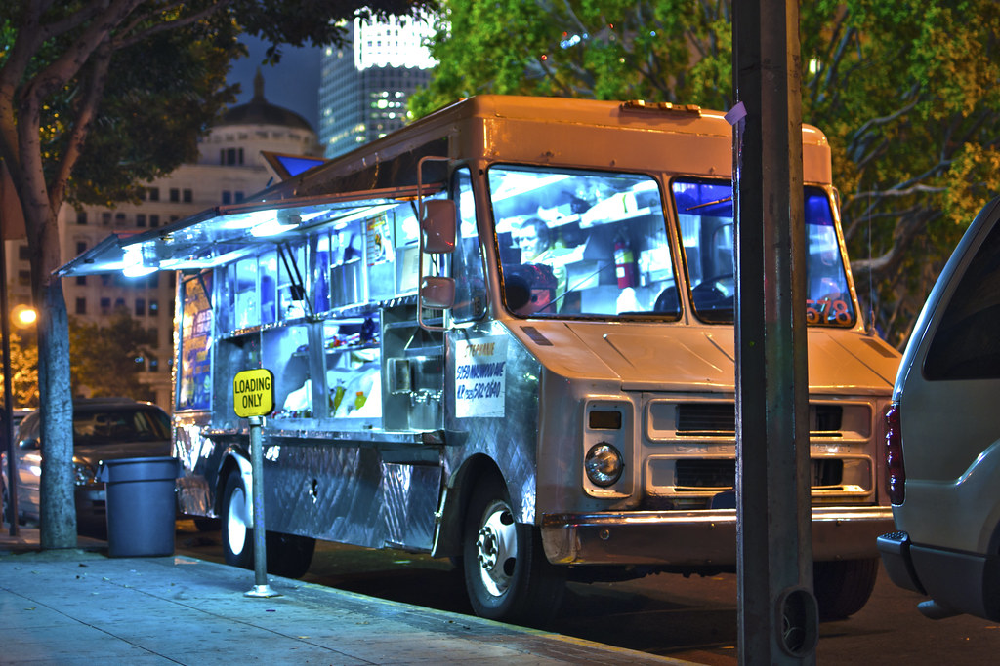
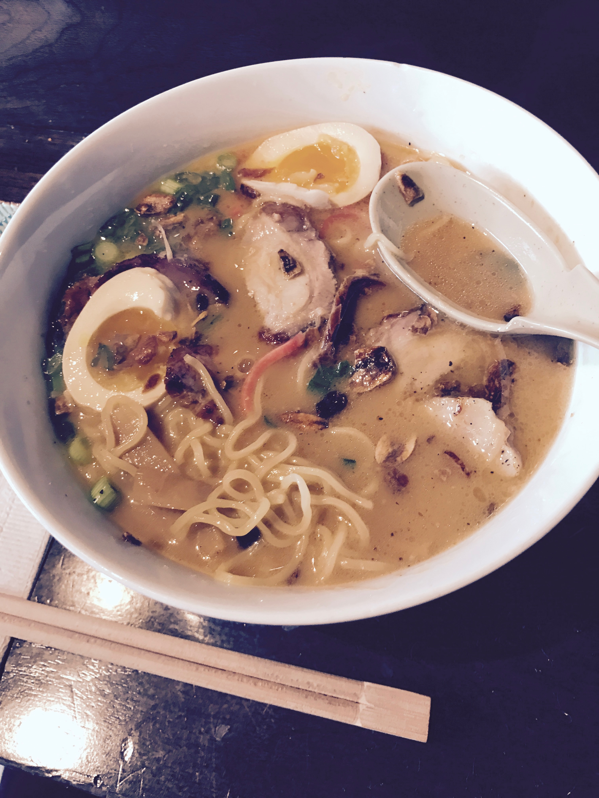
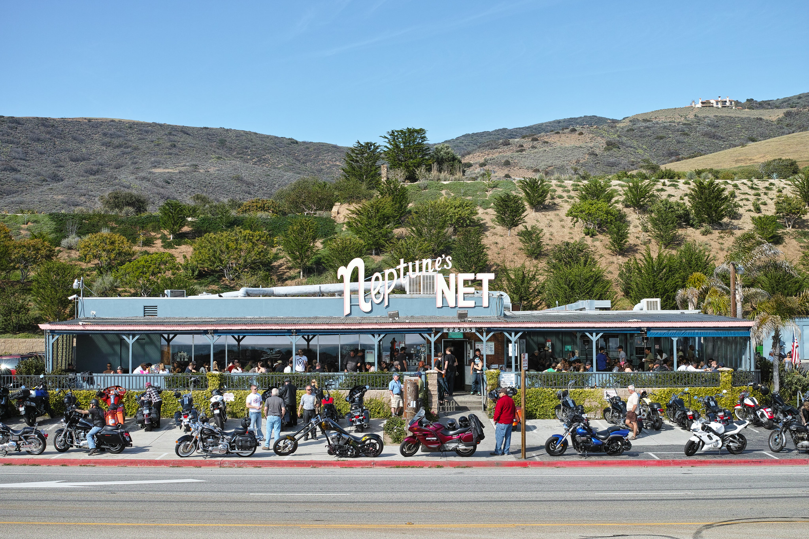

Mexican Food
It's no secret that Los Angeles, and California in general, has a large hispanic population. This has resulted in Southern California becoming
home to the best Mexican food in the country (sorry Texas, its true). L.A. is home to straight up authentic spots and newer, more modern takes
on classic recipes. Whatever you're looking for there's sure to be something you definitely come back for the next day (or meal).
To be completely honest, you could go to any random Mexican restaurant in L.A. and get better, more authentic dishes than 90% of the country
so you really can't go wrong here.
My top 5 spots in Los Angeles to get your fix for Mexican food:

Image taken from Flickr
Asian Cuisines
With nearly 2 million Asian Americans living in Los Angeles, the city boasts some of the best Asian cuisine in the world. Whether you're here for
some fusion dishes or traditional meals, the sheer variety you have your fingertips is astonishing. If you only had 7 days in L.A. you could make
your whole trip a mission to try cuisine from all over Asia in just that week. Japanes, Thai, Filipino, Chinese, Vietnamese, Indian, Burmese,
you name it and L.A.'s got it!
Here's my top 5 places for Asian cuisine:

Much like Mexican cuisine, there's a good chance that going to any random Asian restaurant you happen upon in this city will give you
a more delicious, authentic experience when compared to the rest of the U.S.
Seafood
While we don't have the reputation for seafood that the east coast has (we make up for that by having the best sushi in the country, it's a fact),
we still have a couple of decent options to for you to check out. We are a coastal city, but that doesn't mean you need to make your way to the
beach to get a taste of some good grub (and frankly, no one has the time).
Here are my top spots in the city to get your fix for seafood:

Image taken from Flickr
Again, we're not really known for our seafood despite being a coastal city, but there's still good selection to get your fix.